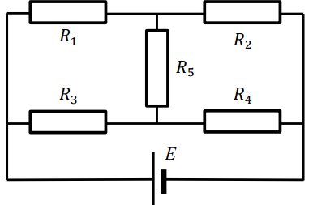

Задача 1. Планета с ядро.
Хипотетична планета е съставена от ядро с неизвестна плътност $\rho_2$ и радиус $r_2 = 3500 \mathrm{~km}$ и външен слой (“мантия”) с плътност $\rho_1 = 4,50 \mathrm{~g/cm^3}$. Радиусът на планетата е $r_1 = 6400 \mathrm{~km}$. Ускорението на свободно падане на повърхността й е $g(r_1) = 9,81 \mathrm{~m/s^2}$.
a) Изчислете плътността $\rho_2$ на ядрото й. [1 т.]
б) Получете формула за ускорението $g(r)$ на свободно падане за разстояния от центъра на планетата $r \leq r_2 $ . [0,5 т.] Колко е стойността на ускорението $g(r_2) $? [0,5 т.]
в) Оказва се, че при някакво разстояние $r_x \in (r_2, r_1)$, ускорението $g(r)$ има локален минимум. Изчислете $r_x$ и $g(r_x)$. [2 т.]
г) Изчислете приближено налягането $p(0)$ в центъра на планетата (в единици atm). За целта приемете, че ядрото и мантията могат да се разглеждат като флуиди, налягането на атмосферата на планетата е пренебрежимо малко ($p(r_1) = 0$) и ускорението на свободно падане в мантията е постоянно, $g(r) = 10 \mathrm{~m/s^2}$ за $r \in (r_2, r_1). $ [1,5 т.]
Механична вълна, когато преминава през границата между две среди, се пречупва. Законът за пречупването е същият като законът на Снелиус за светлината: $\displaystyle \frac{ \sin\alpha_1}{\sin\alpha_2}=\frac{v_1}{v_2}$, където $\alpha_1$ и $v_1$ са ъгълът на падане и скоростта на разпространение на вълната в първата среда, а $\alpha_2$ и $v_2$ са ъгълът на пречупване и скоростта на разпространение на вълната във втората среда. За простота по-нататък ще се разглеждат само един тип механични (сеизмични) вълни - надлъжни. Наличието на всякакви отразени вълни се пренебрегва. Скоростта на разпространение на сеизмичната вълна в мантията е $v_1 = 12 \mathrm{~km/s}$, а в ядрото - $ v_2 = 9 \mathrm{~km/s}$. Нека т. $ N$ е северният полюс на планетата и е епицентър на планетотресение (център на сеизмичен взрив), а т. $ C $ -центърът на планетата. Нека т. $ X$ е точка от повърхността на планетата, която сеизмичната вълна достига, тръгвайки от $N$ и преминавайки през вътрешността на планетата. Ъгълът $NCX$ бележим с $\phi$, а ъгълът между $NC$ и посоката на разпространение на вълната, тръгнала от $N $ - с $\gamma$.
д) Намерете интервала от ъгли $\phi$, съответстващи на точки $X$, които вълната достига, без да преминава през ядрото. [0,5 т.]
е) Получете зависимостта $\phi = f(\gamma)$ за вълни, преминали през ядрото. [2 т.]
ж) Изследвайки числено функцията $\phi = f(\gamma)$, получете интервала от ъгли $\phi$ за точки $X$, където не пристигат никакви вълни (мястото на сеизмична сянка) [0,5 т.], интервала от ъгли $\phi$, където пристигат 2 вълни [1 т.] и интервала от ъгли $\phi$, където пристигат 3 вълни. [0,5 т.] Ъглите $\phi$ представете в градуси и ги изчислете с точност $0,1^\circ$.
Задача 2. Небалансиран Уитстонов мост.
Електрическа схема, съдържаща батерия с електродвижещо напрежение $E$ и 5 резистора, свързани по начина, показан на фигурата, се нарича Уитстонов мост. Резисторът $R_5$ всъщност е вътрешното съпротивление на амперметър. Когато амперметърът измерва нулев ток, мостът се нарича балансиран. Обикновено три от резиторите са известни (например $R_2$, $R_3$ и $R_4$, като един или повече могат да се променят/регулират, за да се балансира мостът) и се търси стойността на четвъртия ($R_1$).
а) Намерете формула и изчислете стойността на $R_1$ в случая на балансиран мост (токът през $R_5$ е нула), ако са известни останалите параметри на веригата: $ E = 10 \mathrm{~V}$, $R_2 = 12 \mathrm{~k\Omega}$, $R_3 = 10 \mathrm{~k\Omega}$, $R_4 = 8 \mathrm{k\Omega}$, $R_5 = 10 \mathrm{\Omega}$. [2 т.]
\begin{wrapfigure}{l}{0.40\textwidth}  \caption{} \end{wrapfigure}
б) Намерете формула за тока $I_5$ през резистора $R_5$ при произволни стойности на параметрите на веригата. [5 т.]
в) Намерете приближена формула за тока I5 през резистора $R_5$ в случая, когато $R_5 \ll R_1$, $R_2$, $R_3$, $R_4 $ [1 т.]
г) Уитстонов мост се използва за качествен контрол при производство на резистори с номинална стойност $10 \mathrm{~k\Omega}$. Мостът се балансира с еталонни (известни с голяма точност) и равни по стойност резистори, $R_2 = R_3 = R_4 = 10 \mathrm{~k\Omega}$. Проверяваният резистор е $R_1$. Според показанията на амперметъра (с пренебрежимо съпротивление) мостът е балансиран, но всъщност амперметърът показва нулев ток, когато стойността на тока през него е $I_5 \leq 1 \mu A$. Електродвижещото напрежение $E = 10 \mathrm{~V}$. С каква абсолютна грешка $\Delta R_1$ се измерва резисторът $R_1 $? [2 т.]
Задача 3. Изстиващ балон.
$ s$ мола идеален газ се намират в сферичен балон. Балонът се намира във вакуум с нулева температура и притежава такива еластични свойства, че радисът му $r$ и налягането $p$ на газа в него са свързани с равенството $p = ar,$ където $a$ е някаква константа. Зависимостта на налягането $p$ в балона от обема му $V$ сe описва от закона $p.V^n = const$.
а) Изчислете числото $n$. [1 т.]
б) Ако моларният капацитет при постоянен обем на газа е $C_V = \frac{3}{2}R$, където $R$ е универсалната газова константа, пресметнете топлинния капацитет $C_{all}$ на целия газ в балона при условията, при които е поставен. [3,5 т.]
в) Ако първоначалната температура на газа е $T_0 $ , намерете как температурата $T(t)$ на балона се изменя с времето (изразена чрез $\sigma$, $a$, $T_0$ и $t$). Приемете, че балонът има пренебрежим топлинен капацитет и излъчва като абсолютно черно тяло. [3,5 т.]
г) Нека първоначалната температура на газа е $T_0 = 300 \mathrm{~K}$, налягането му е $p_0 = 1 \mathrm{~atm}$, а обемът му е $V_0 = 1 \mathrm{~m^3}$. След колко време $t_{1/2}$ температурата му ще спадне наполовина? Намерете формула [1,5 т.] за $t_{1/2}$(изразено чрез $T_0$, $p_0$, $V_0$ и $\sigma$) и изчислете стойността му. [0,5 т.]
Полезна математика и фундаментални константи:
Гравитационна константа $G = 6,67.10^{-11} \mathrm{~N.m^2/kg^2} $
$ 1 \mathrm{~atm} = 10^5 \mathrm{~Pa} $
Синусова теорема: В триъгълник със страни $a$, $b$, $c$ и ъгли срещу тези страни $\alpha$, $\beta$, $\gamma$ са изпълнени равенствата $\displaystyle \frac{a}{\sin \alpha} = \frac{b}{\sin \beta} = \frac{c}{\sin \gamma} $
Константа на Стефан-Болцман $\sigma = 5,67.10^{-8} \mathrm{~W.m^{-2}.K^{-4}} $
Ако една функция $T(t)$ е свързана с производната си така: $\displaystyle \frac{dT(t)}{dt} = B.[T(t)]^k$, където $B $ -е константа, а $k $ - число ($k \neq 1$), то функцията има вида $T(t) = [(-k + 1)(Bt + D)]^{\frac{1}{-k+1}}$, където $D$ е неизвестна константа.